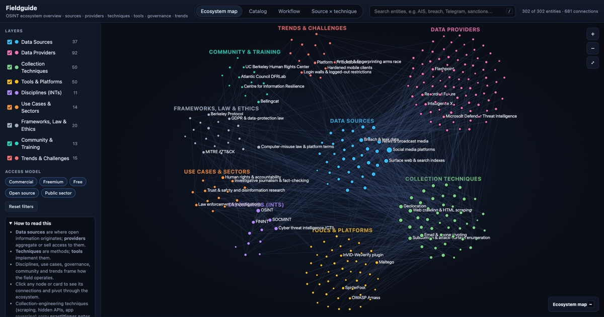

fieldguide
The OSINT ecosystem: data sources, providers, collection techniques, tools, disciplines, use cases, law, ethics and trends.
- 300+ entities and 680+ connections
- Ecosystem map, catalog, intelligence-cycle workflow, source × technique matrix
- Practitioner notes on scraping, hidden APIs and mobile-app reversing